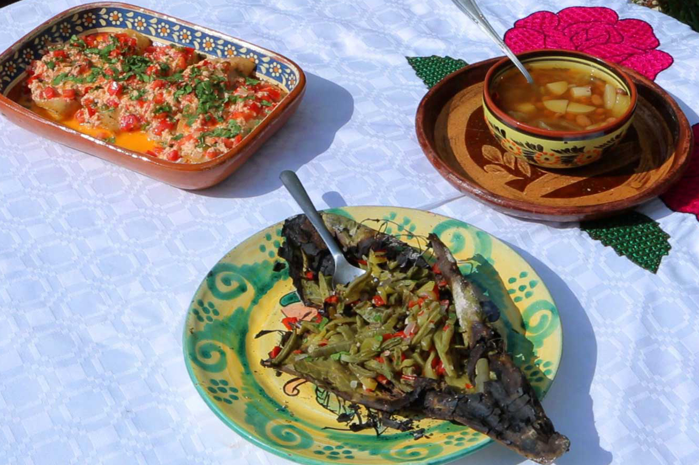

CAPONE DE NOPALES CON XOCONOXTLE

HERENCIA DE LA COCINA OTOMÍ, ASENTADA EN LA PARTE NORTE DEL ESTADO Y MUY POPULAR ENTRE SUS HABITANTES ES ESTE PLATILLO ELABORADO CON INGREDIENTES MUY CARACTERÍSTICOS DE ESTA CULTURA.
LA BASE DE ESTE PLATO ES LA SALSA CAPONE, QUE SE PREPARA CON NOPALES, XOCONOXTLES, TOMATE DE MILPA, CEBOLLA, CHILE Y CILANTRO. ESTA PREPARACIÓN SE AGREGA A UN CALDO DE FRIJOLES RECIÉN HECHOS Y EL SABOR ES UN DELEITE AL PALADAR